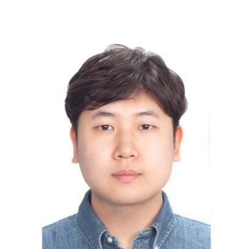

Texas A&M University · College Station, TX 77843
I am a researcher in condensed-matter and materials physics, currently based in the Department of Physics & Astronomy at Texas A&M. My work centers on solid-state NMR/NQR studies of quantum materials. Currently, I'm working on Indium-intercalated TaS₂ transition-metal dichalcogenides (TMD), searching for charge-density-wave behavior and probing local electronic environments via NQR.
Previously, at Hankuk University of Foreign Studies, I studied soft magnetic composites for power-inductor cores and electromagnetic interference (EMI) shielding materials, including spinel ferrites, hexaferrites, and 2-D materials such as MXenes.

Working with Prof. Joseph H. Ross Jr. on charge-density-wave behavior and the local electronic environments of Indium-intercalated TaS₂, using solid-state NMR/NQR techniques.
A manuscript on exponential fitting of combined relaxation behavior is in preparation.
i. Solid-state NMR/NQR of quantum materials
Combined quadrupole and magnetic relaxation behavior, exponential fitting strategies, and what they reveal about local structure in quantum materials.
ii. Soft magnetic composites (SMCs)
Metallic SMCs as next-generation power-inductor cores. Permeability enhancement and core-loss reduction in the high-frequency band (> 1 MHz).
iii. Electromagnetic interference shielding
Spinel ferrites, M-type hexaferrites, and 2-D MXene composites for EMC at sub-6 and 30 GHz bands.